從 1980 年至今，每年春天上映的大銀幕冒險——43 部電影，43 段穿越時空的感動旅程
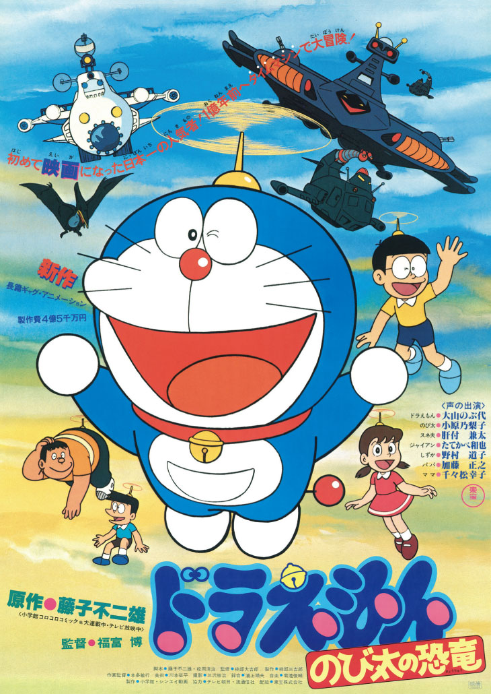
1980大雄在空地發現一塊化石，用哆啦A夢的「即時繁殖藥」孵化出一隻嬰兒恐龍，取名「皮助」。皮助迅速成長，無法繼續藏在家中，大雄決定用時光機將牠送回八千萬年前的白堊紀。旅途中一行人遭遇異時代偷獵者，最終與皮助含淚道別。
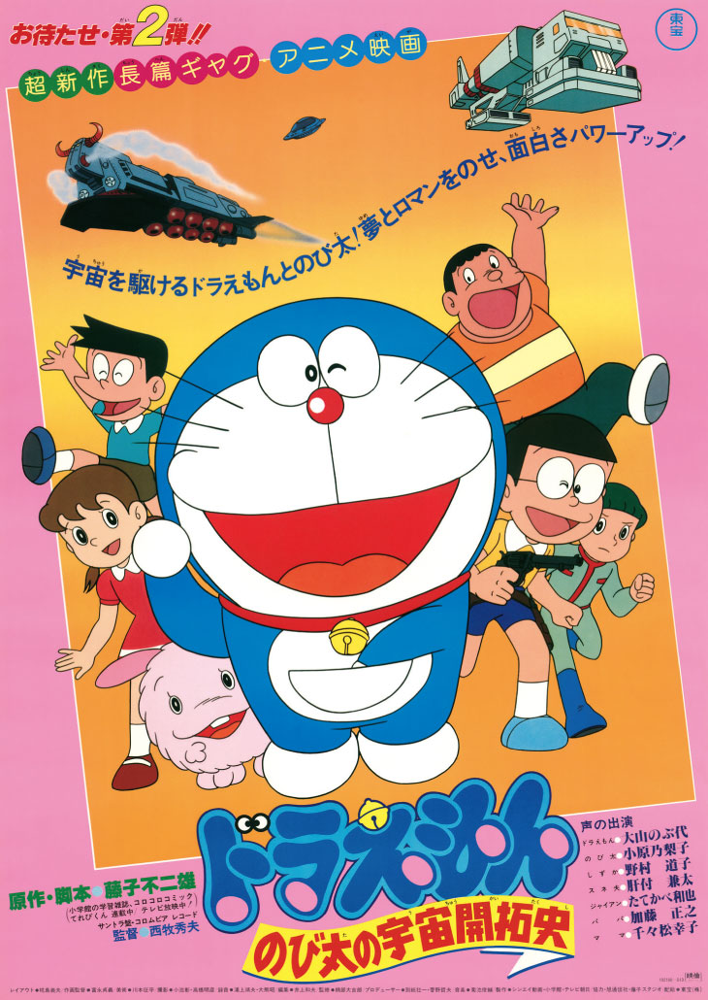
1981太空植物星球「Florian」遭到 Gilmore 鑽探帝國入侵，少年「Loplyce」穿越宇宙逃到大雄的壁櫥求援。一行人乘坐宇宙飛船前往太空，與星球居民並肩對抗巨大機械艦隊，展開哆啦A夢系列首部宇宙背景的冒險。
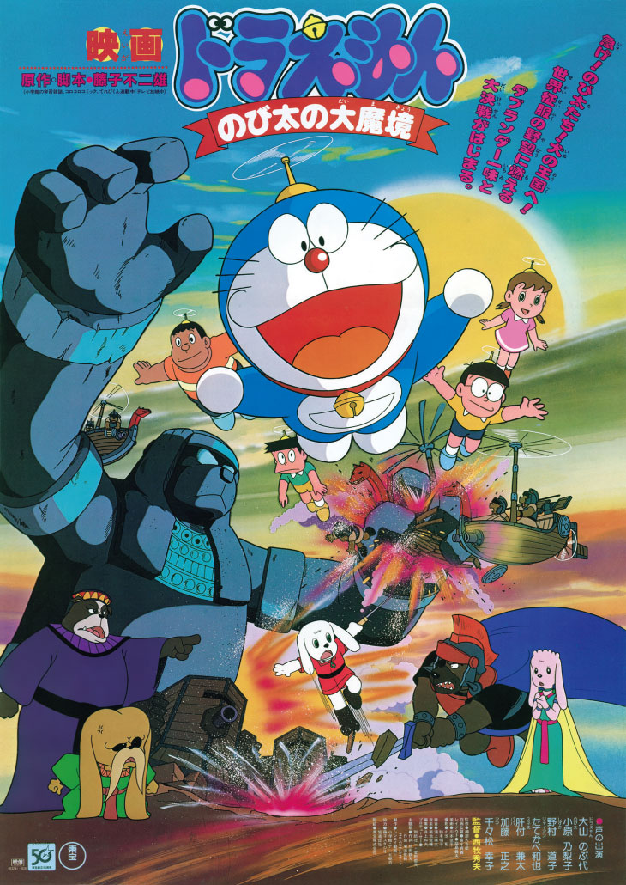
1982大雄的玩具熊「太郎」突然自己走動，哆啦A夢追蹤訊號後發現了隱藏在非洲叢林深處的小人國「貝卡萊」。統治者「鼴鼠族」殘暴壓迫著小人們，大雄一行人以秘密道具幫助受壓迫的居民反抗暴政，解放這個被遺忘的王國。
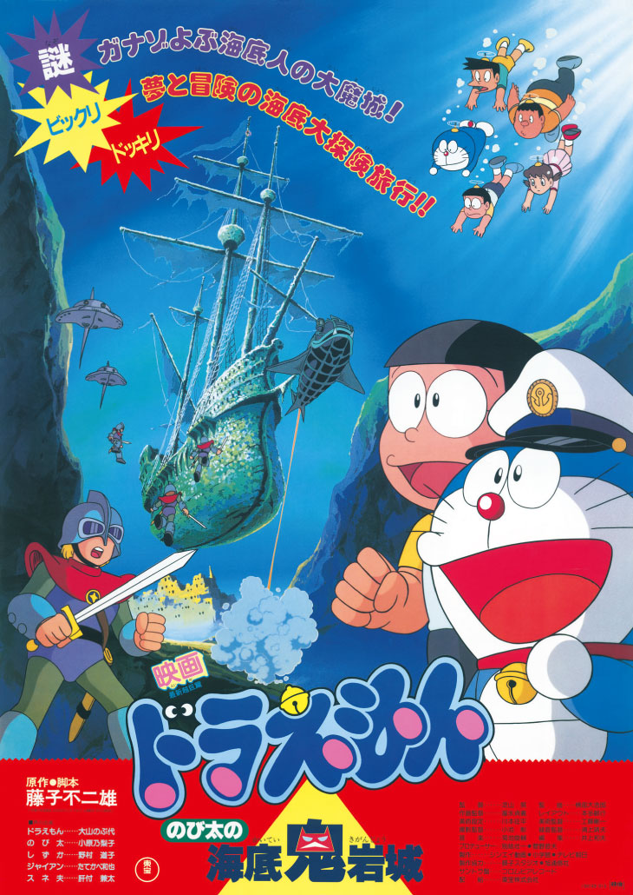
1983大雄一行人前往美麗的海底王國探險，卻發現傳說中的巨型機械城「鬼岩城」正在從海底復活。若它與宇宙人控制的「鬼岩城二號」合而為一，將引發滅世洪水。哆啦A夢的道具在深海中失效，一行人必須靠智慧與勇氣阻止末世危機。
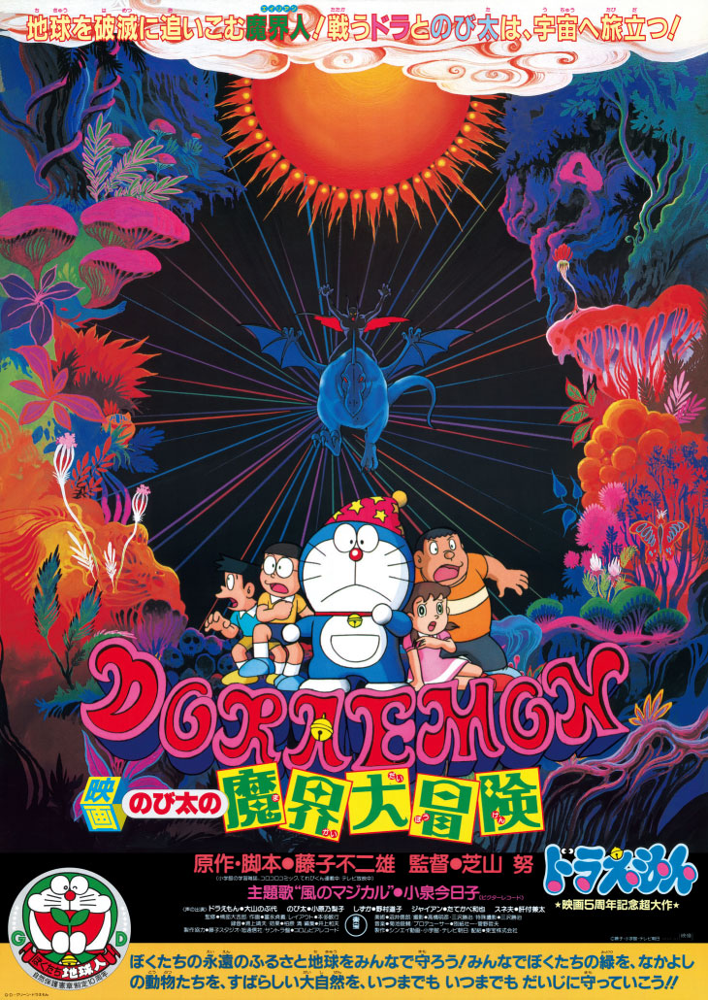
1984大雄用「如果電話亭」創造了一個存在魔法的平行世界，靜香在那裡是魔法少女「魔女小靜」。然而邪惡魔族「蠑螈」企圖侵佔這個魔法世界。在這個世界裡，哆啦A夢的道具全部失效，大雄等人必須學習魔法，以純粹的力量對抗強大的惡魔。
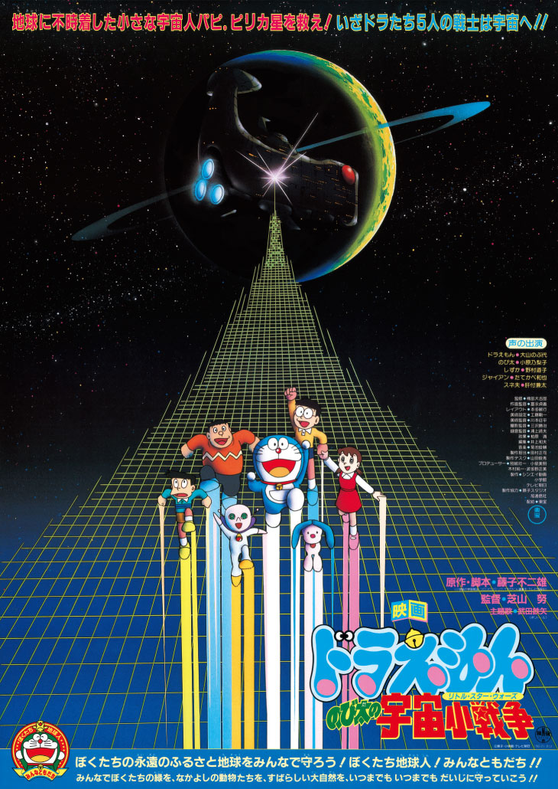
1985外太空遙遠星球的縮小版總統「帕比」逃到地球，對大雄一行人而言他只有手指大小。帕比的星球遭到軍事政變，獨裁將軍掌權。大雄等人用道具縮小自身後前往太空，在微型戰場上以智慧對抗全副武裝的機甲軍隊，協助帕比奪回政權。
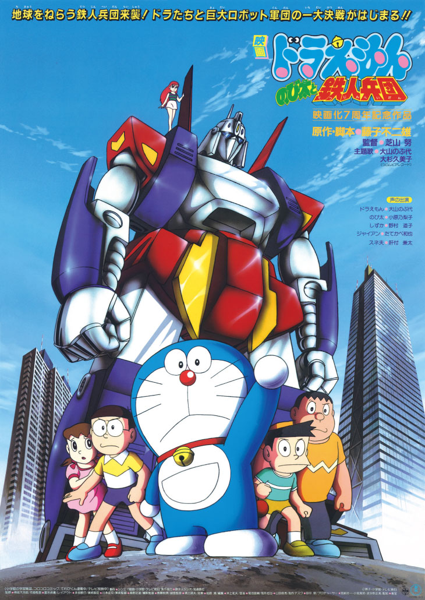
1986大雄從河裡撿到機器人零件，哆啦A夢將其組裝後發現是一個來自宇宙的少女型機器人「利琉路」。她的主人企圖利用平行鏡面世界入侵地球，派出巨大鐵人兵團。然而利琉路與靜香之間跨越敵我的深厚友情，在最後關頭改變了戰爭走向，讓侵略計劃徹底崩潰。
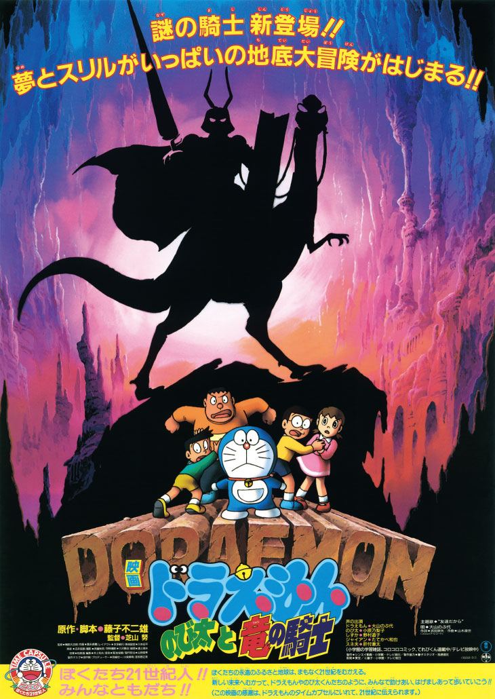
1987地球內部隱藏著一個「地底世界」，恐龍文明在此延續了六千五百萬年，建立出高度發展的社會。大雄一行人發現地底恐龍族與地表人類之間潛藏著即將爆發的衝突，必須在兩個文明之間架起溝通橋樑，化解誤解與戰爭。
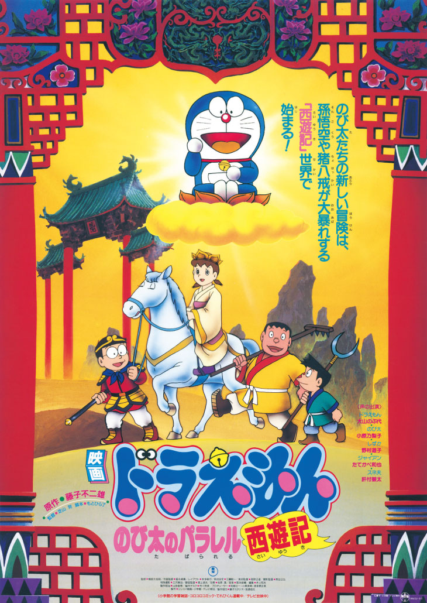
1988哆啦A夢的道具讓大雄等人穿越進了《西遊記》的世界，孫悟空、豬八戒、沙悟淨等人物真實存在。邪惡的妖怪真神試圖霸佔這個傳說世界，唐僧一行的取經之旅面臨危機。現代小朋友的智慧和道具成了拯救古代神話世界的關鍵。
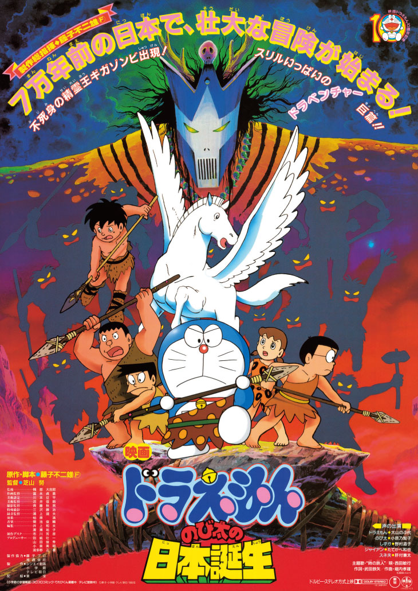
1989大雄一行人因為家人衝突，決定各自「離家出走」，乘時光機前往七萬年前的石器時代日本。在荒野中遇到被神秘追殺的少年「克魯魯」和他的猛獸夥伴「卡比洛斯」。在史前大地的狂風與雷雨中，大雄學到了家人的重要，也解開了這片大陸誕生的謎題。
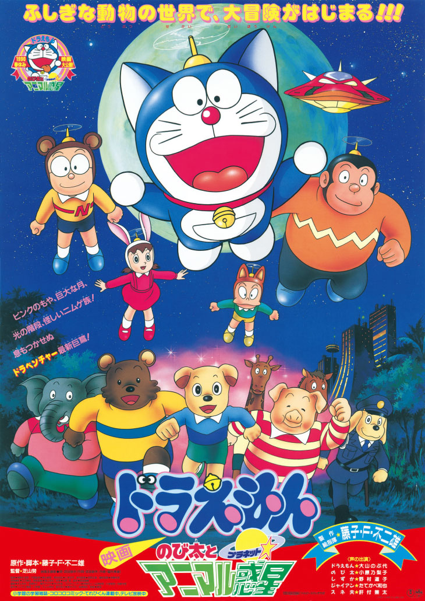
1990透過神秘通路，大雄一行人抵達了一個只有動物居住的和平星球。然而人類形態的外來侵略者正悄悄污染這顆美麗星球，動物文明正面臨覆滅危機。大雄等人與動物星球居民齊心對抗，守護這個沒有人類污染的純淨世界。
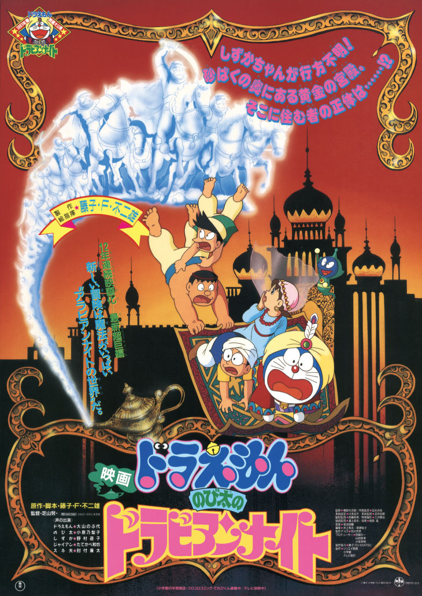
1991靜香正在閱讀《一千零一夜》，忽然被一張神秘魔毯捲入書中世界。大雄和哆啦A夢追入阿拉伯神話的世界，在飛沙走石的沙漠、金碧輝煌的宮殿和神燈精靈之間展開冒險，尋找被綁架的靜香。
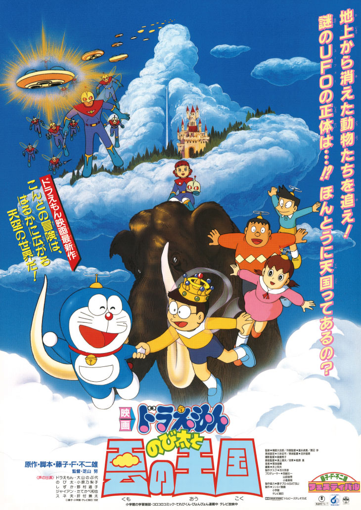
1992大雄和哆啦A夢在雲端構築了小小的天上之城，卻意外發現雲端早有一個古老的「天空族」文明。天空族視人類為破壞自然的罪人，正計劃以洪水清洗地球——大雄等人必須向天空族的神靈證明人類也有善良的一面，否則地球將迎來滅頂之災。
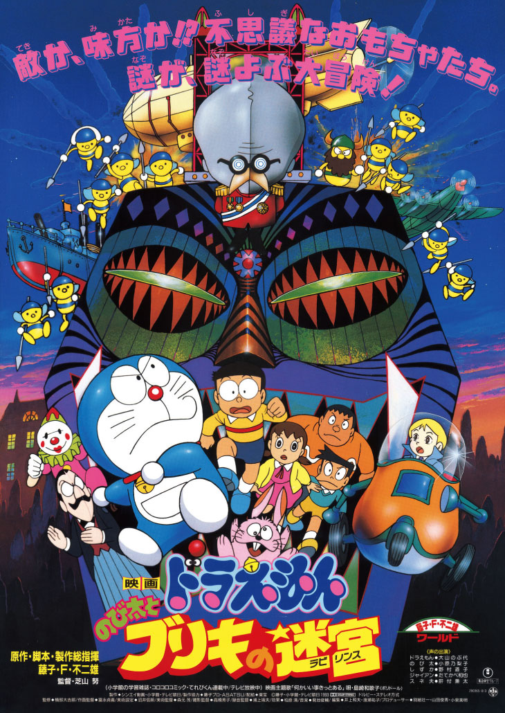
1993大雄的玩具熊奪走了哆啦A夢的四次元口袋！追蹤到宇宙星球「チャモチャ星」，那裡的人類被機器人完全奴役，喪失了思考和勞動的能力，淪為自我麻痺的存在。大雄等人必須在沒有道具的情況下逃出迷宮，同時喚醒被遺忘了的人類意志。
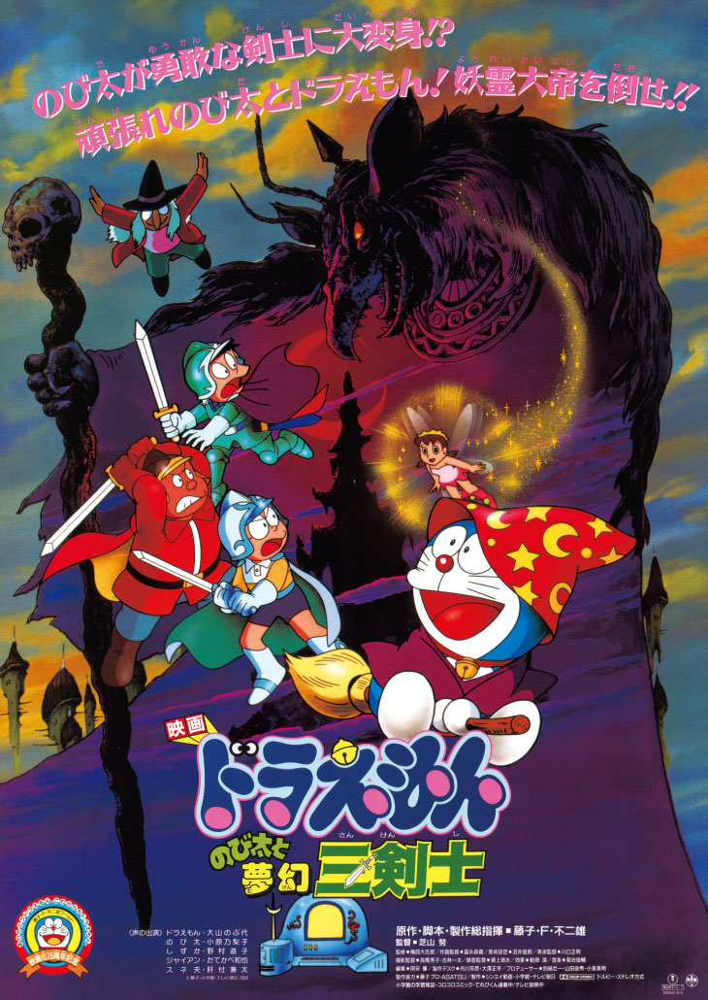
1994哆啦A夢的道具「夢幻工廠」讓大雄一行人進入自己設計的劍與魔法夢境世界。然而夢中潛藏著一個吞噬夢境的邪惡存在，若不能從夢中奪回控制，夢境中的死亡也將殃及現實中沉睡的身體。
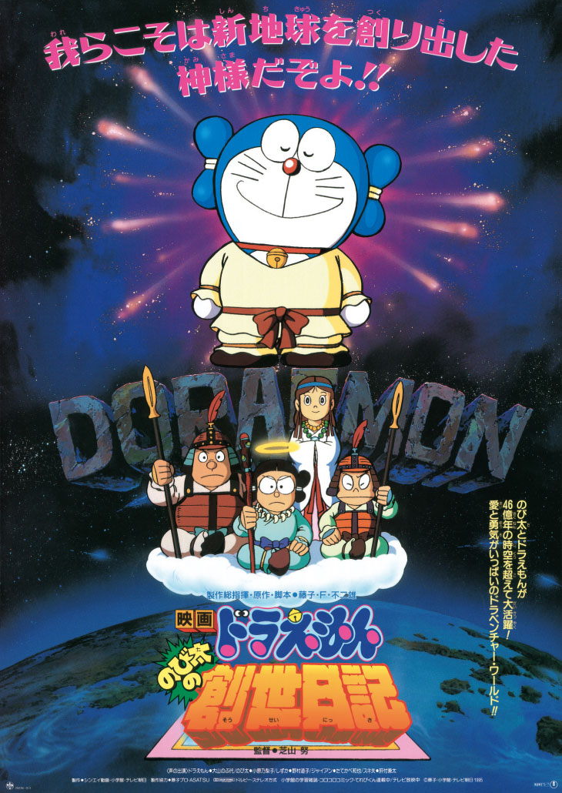
1995哆啦A夢拿來「神之筆記本」，在上面寫下設定就能創造出真實存在的世界。大雄用筆記本創造了一顆行星，讓生命在其上自行演化繁衍。觀看自己創造的文明跨越數百萬年的興衰，卻在某一天發現這個小世界竟遭到外來惡意侵入。
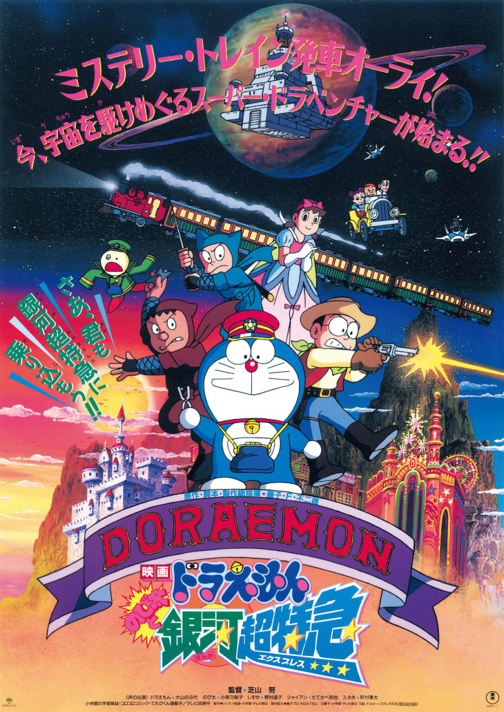
1996哆啦A夢帶大家搭上「銀河超特急」——一艘豪華遊輪式宇宙列車——展開星際旅遊。然而列車上的乘客開始神秘失蹤，所謂的「星際度假」背後隱藏著令人不寒而慄的陰謀。這是藤子・F・不二雄先生逝世前最後一部完整監修的劇場版。
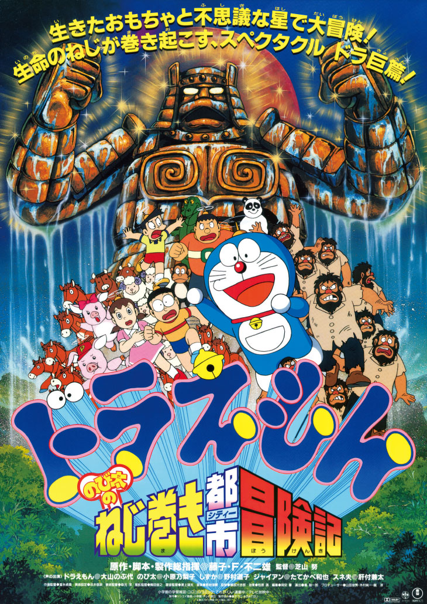
1997大雄等人的玩具被哆啦A夢的道具帶到雲端，玩具人偶在天空中自動建起一座小小的「發條城市」，竟有了自己的生命和文明。然而惡意的外力侵入了這個玩具烏托邦，大雄等人必須縮小身體進入玩具世界拯救朋友。
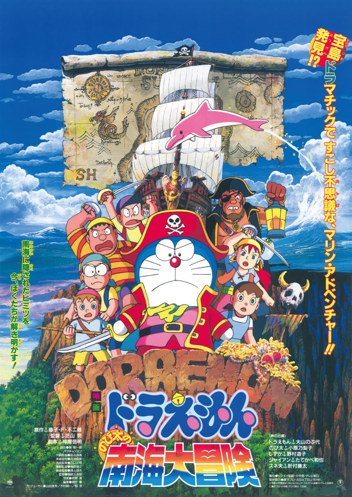
1998哆啦A夢帶大家乘坐時光機穿越到 17 世紀的大航海時代，成為海盜船員。在加勒比海的浪濤中，他們捲入了尋找傳說神秘寶藏的競賽，並與殖民者的鐵甲艦隊正面交鋒，上演了哆啦A夢系列中最壯觀的海戰場面。
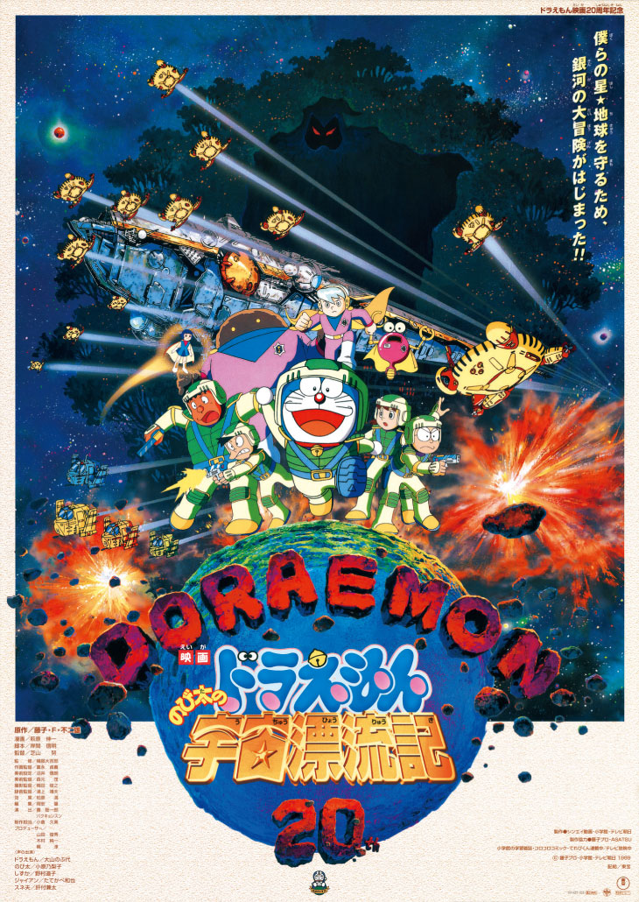
1999太空旅行途中宇宙飛船墜落在未知星球，表面看似平靜，卻藏著一個恐怖的統治系統——星球上的生命體被植入控制晶片，完全受到支配。大雄一行人在資訊完全封鎖的環境中，試圖找出反抗這個看不見的控制機制的方法。
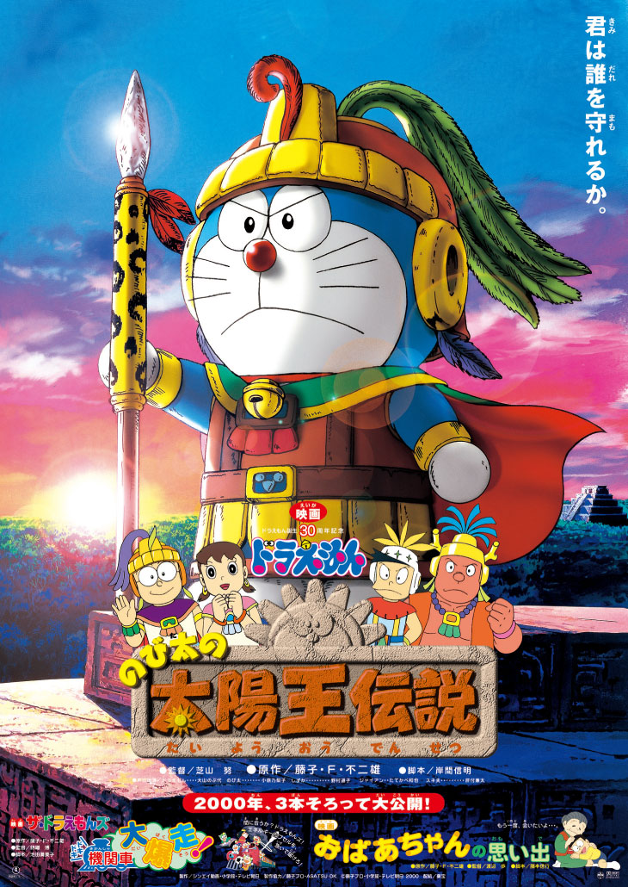
2000哆啦A夢的「複製道具」複製出了一個與大雄長得一模一樣的分身。分身意外穿越到古代文明王國，被誤認為太陽神轉世的王子，大雄必須前往替換分身。在金字塔文明的壯麗宮殿裡，兩個「大雄」的命運產生奇妙交錯。
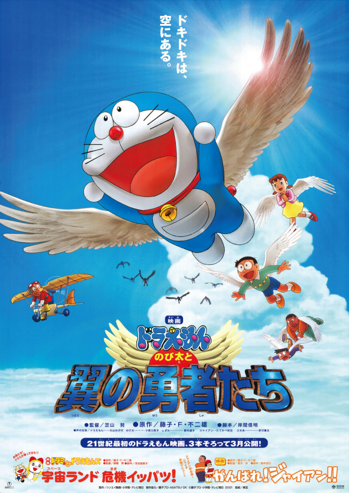
2001在地球某處隱藏著鳥人族的秘密文明，他們長著翅膀翱翔於天際，建立了純粹的天空社會。大雄一行人發現後被邀入其中，卻逐漸察覺族內的階級矛盾與外部威脅正在逼近，這個美麗種族的存亡懸於一線。
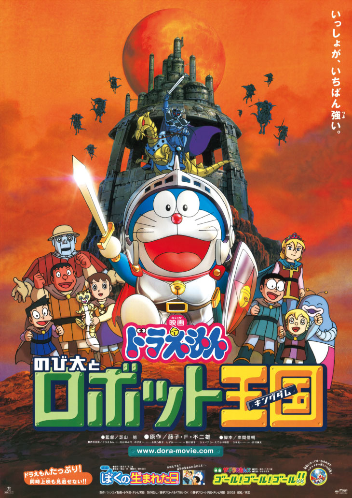
2002機器人「波可」從一個以機器人為奴隸的宇宙星球逃到地球求援。大雄一行人前往那個星球後發現，機器人被程式化為無情工具，而波可卻真實擁有情感。在「機器人到底有沒有靈魂」的哲學辯論中，大雄為波可的自由而戰。
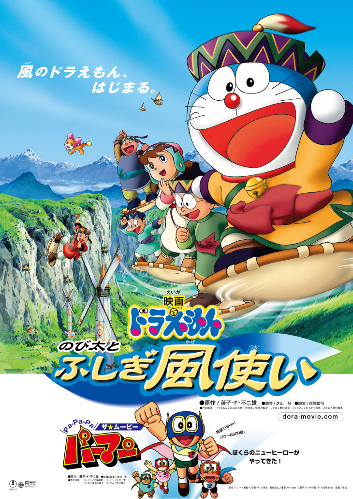
2003少女「風莉」是能召喚風的神秘存在，被邪惡勢力追捕。哆啦A夢一行人幫她逃往雲端的風之神殿，卻捲入了一個影響整個地球大氣層的陰謀。風的力量與自然法則的威嚴在銀幕上壯麗呈現。
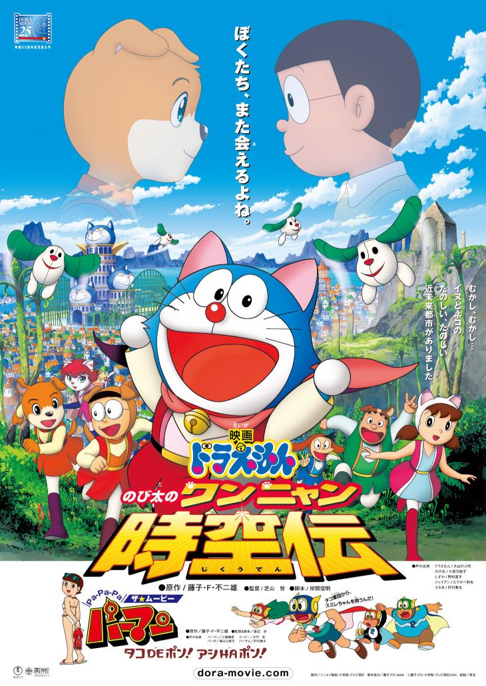
2004大雄偷偷帶著哆啦A夢的道具，讓流浪貓狗組成了「貓犬共和國」，建立在兩萬年前的過去。貓犬們建立出嶄新的文明。數年後大雄回到那個年代，發現動物共和國正面臨前所未有的危機，與昔日的貓犬朋友重逢的情感衝擊極為強烈。
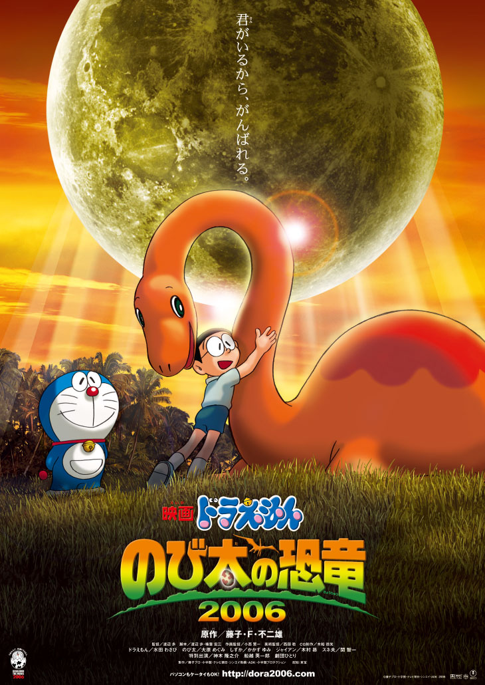
2006新時代的第一部電影，選擇重製系列的起點「大雄的恐龍」（1980）。新聲優陣容首次亮相，以現代 CG 技術重現皮助與大雄的感人故事。忠實呈現原作精神的同時，加入了更豐富的動作場面與情感細節。
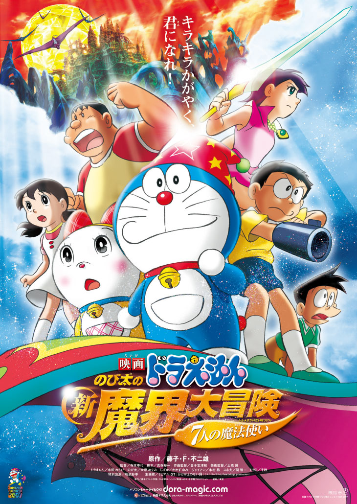
2007「魔界大冒險」（1984）的全新重製。以現代動畫技術重現平行魔法世界，故事骨幹相同，同時加入了新角色魔法少女「エリス」，為重製版帶來獨特的新情感線索，受到新舊兩代觀眾的共同喜愛。
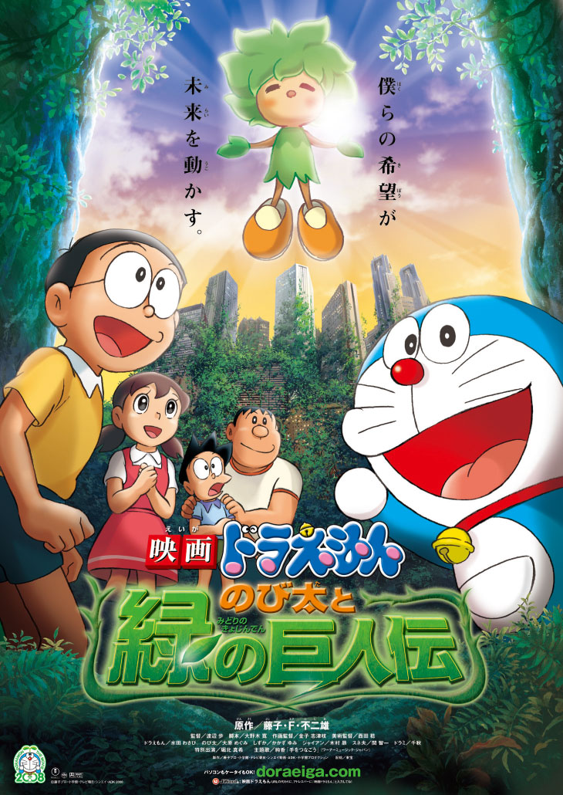
2008新時代首部全原創電影。大雄等人到達一個被植物文明統治的星球，被稱為「綠の巨人」的巨型植物人威脅著星球上的小生命。強烈的環保主題呼應當年全球暖化議題，是新系列以電影形式宣示原創路線的重要作品。
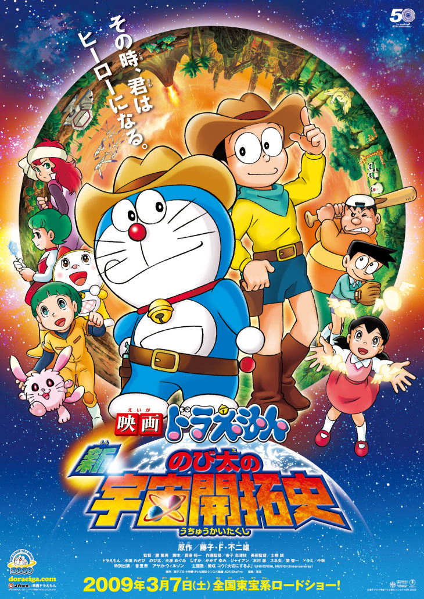
20091981 年版的重製，Loplyce 的星球解放故事以高品質 CG 宇宙戰爭場面全新呈現，並加入了 Loplyce 父親的故事線，讓原版的情感更加豐富立體，父子情義成為本片的新核心情感。
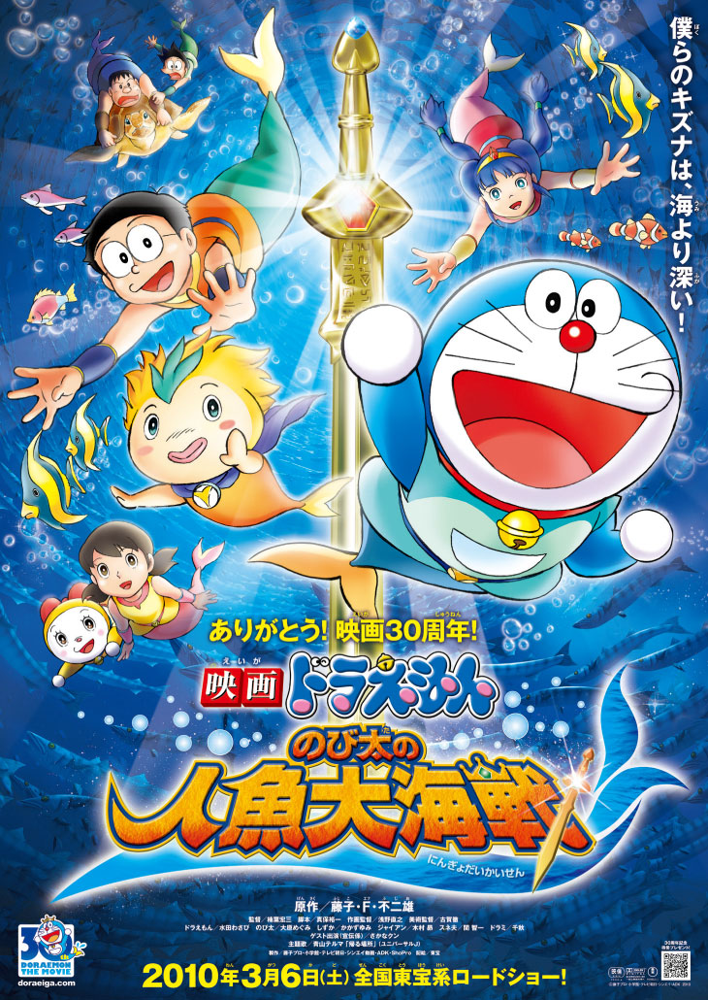
2010全原創故事。大雄等人發現海底存在著人魚文明，並被捲入人魚族與入侵機械軍的水下大海戰。人魚公主的悲壯抵抗與壯觀的水中戰鬥場面是本片兩大亮點，是新時代視覺效果最震撼的動作電影之一。
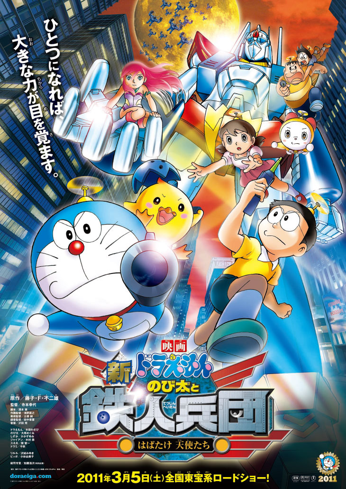
2011系列最高傑作「鐵人兵團」的全新重製。利琉路與靜香的跨越敵我友情再度感動全場，加入了「天空の勇者たち」副題，部分劇情強化了利琉路的內心衝突與最終選擇，讓感人程度有增無減。
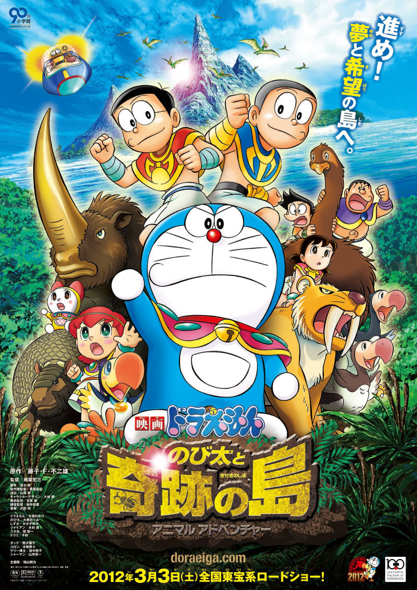
2012全原創環保主題。大雄在神秘小島上發現了各種已滅絕的奇特動物，那裡是地球上最後的動物樂園。然而人類開發的威脅正在逼近，大雄和瀕危動物的相遇讓人對物種滅絕問題有了切身感受。
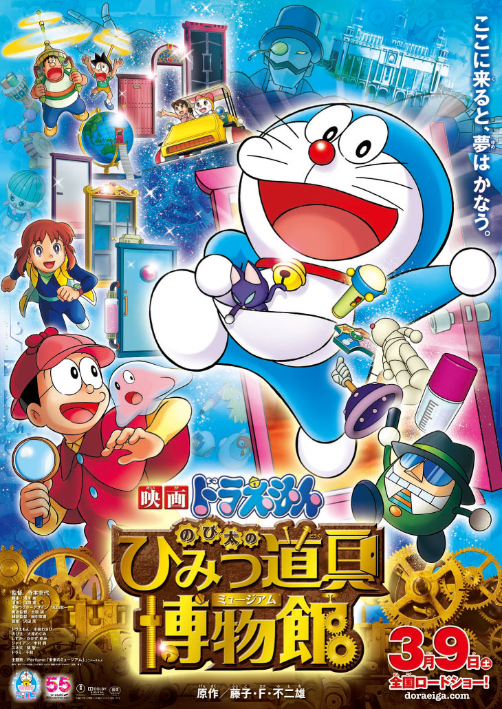
2013哆啦A夢珍視的慣用鈴鐺神秘失竊！追查線索後來到宇宙中一個神秘的「秘密道具博物館」，所有歷代道具都被展示其中。博物館館長的真實面目與鈴鐺失竊的原因交織成一個比表面更深刻的謎題。
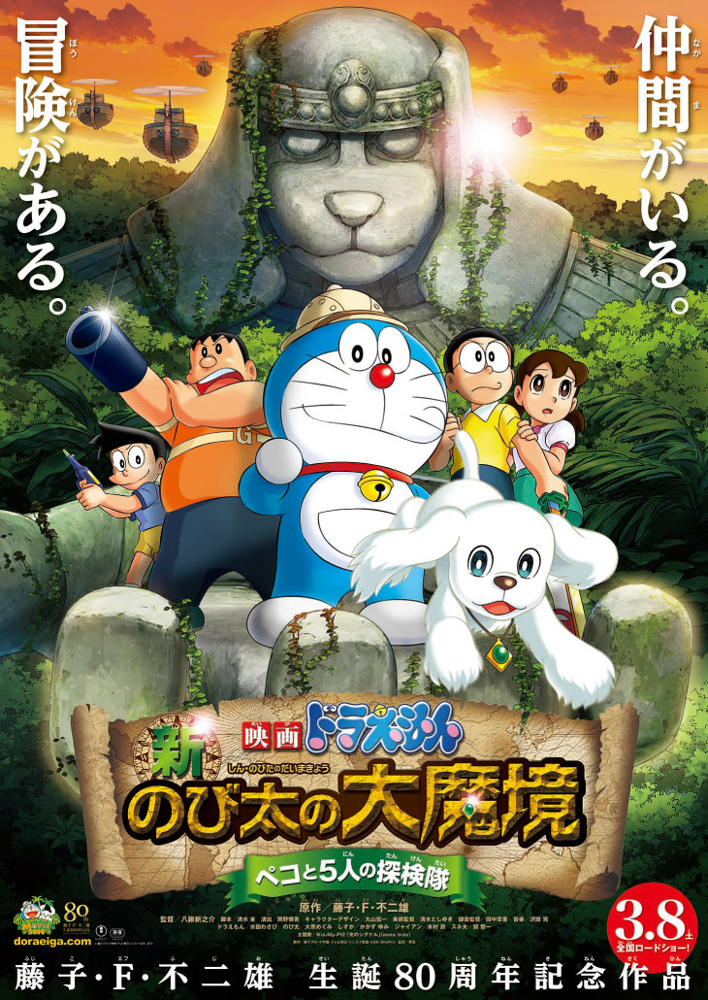
20141982 年版「大魔境」的重製，加入原版未有的少年「貝可」作為貝卡萊王國的核心角色，強化了大雄與貝可之間跨文化的友情。非洲叢林的視覺設計更加壯觀，讓小人國的反抗更具氣勢。
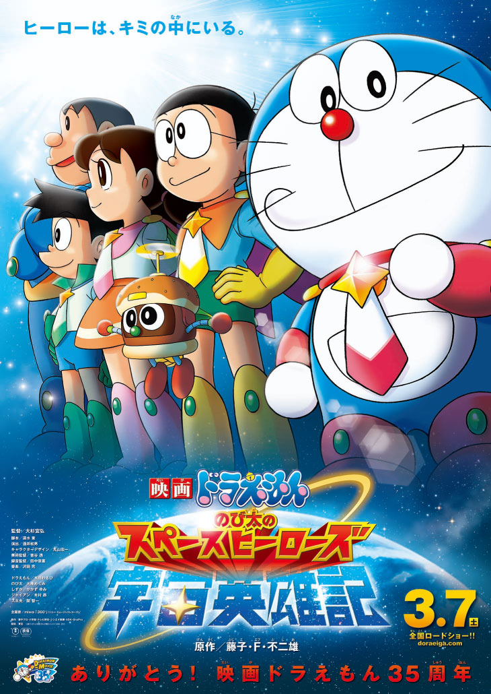
2015全原創故事。大雄一行人搖身成為宇宙超級英雄，前往宇宙中受惡勢力壓迫的星球執行正義任務。超級英雄的特殊服裝造型充滿設計感，熱血動作場面與道具的創意結合是本片最大的看點。
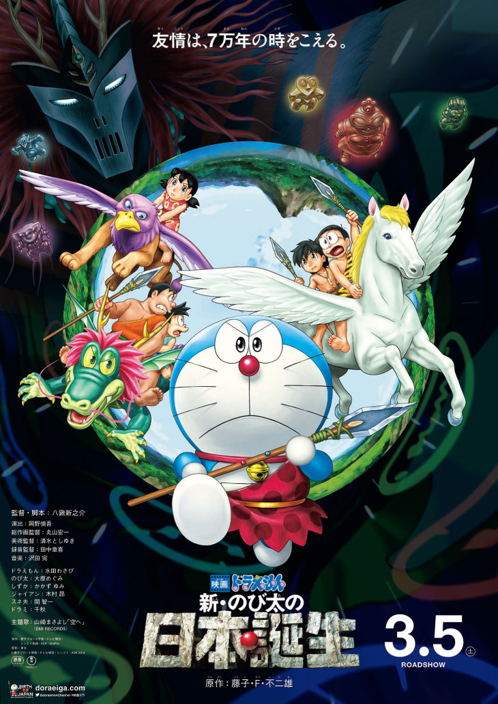
2016昭和名作「日本誕生」（1989）的重製版，七萬年前日本史前大地的史詩冒險全面重現。克魯魯的故事以新動畫技術打造更壯觀的自然景觀，卡比洛斯的戰鬥場面震撼升級，大雄與家人的情感羈絆也比原版更加細膩。
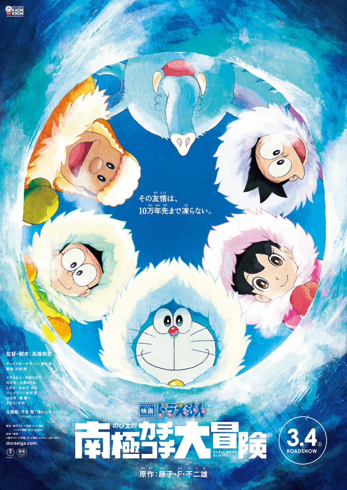
2017全原創故事。哆啦A夢一行人前往南極探險，在冰層下發現了封存三億年前的神秘古代城市。隨著冰封城市開始解凍，其中蘊藏的未知力量可能引發全球性的氣候災難。南極的壯麗冰景與謎樣古文明的組合帶來了前所未有的視覺衝擊。
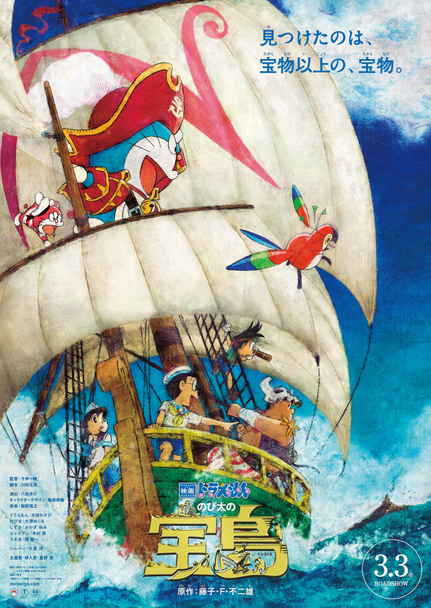
2018大雄從寶藏夢中醒來，堅信世界上真的有寶島。哆啦A夢準備了特製海盜船，一行人出海追尋傳說中的浮動寶島。寶島的秘密牽涉到大雄的弟弟、失落的家人，以及守護寶島的謎樣少女「シルビア」。航海冒險與家庭親情並重，是系列電影感動深度的巔峰之作。
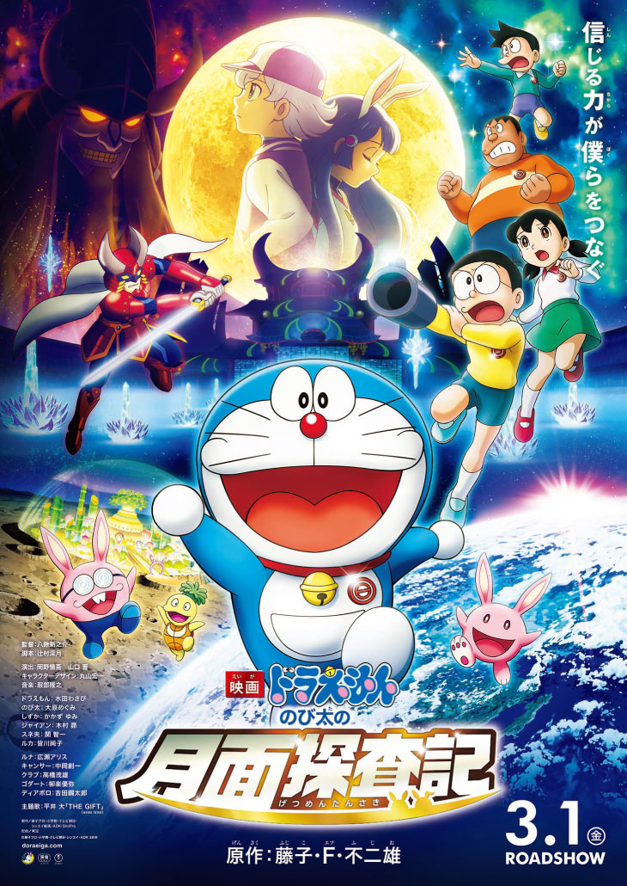
2019大雄用「如果電話亭」在月球背面創造了一個住著「月の民」的秘密世界。他和新朋友月球少年建立了深厚友情，卻發現月球人的真實身份牽涉到一個宇宙級的欺騙陰謀。信任與背叛、幻想與現實之間的情感衝突讓本片超越以往的深度。
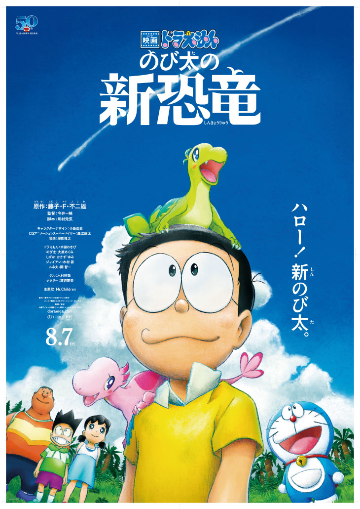
2020哆啦A夢誕生 50 週年的紀念大作。大雄在考古挖掘中孵化出一對雙胞胎恐龍「kū」與「muu」，帶牠們回到白堊紀的旅途中，大雄從照顧兩隻幼小恐龍的過程中真正學會了責任與守護。情感深度向 1980 年的初代之作致敬，卻同時傳遞了全新的溫情。
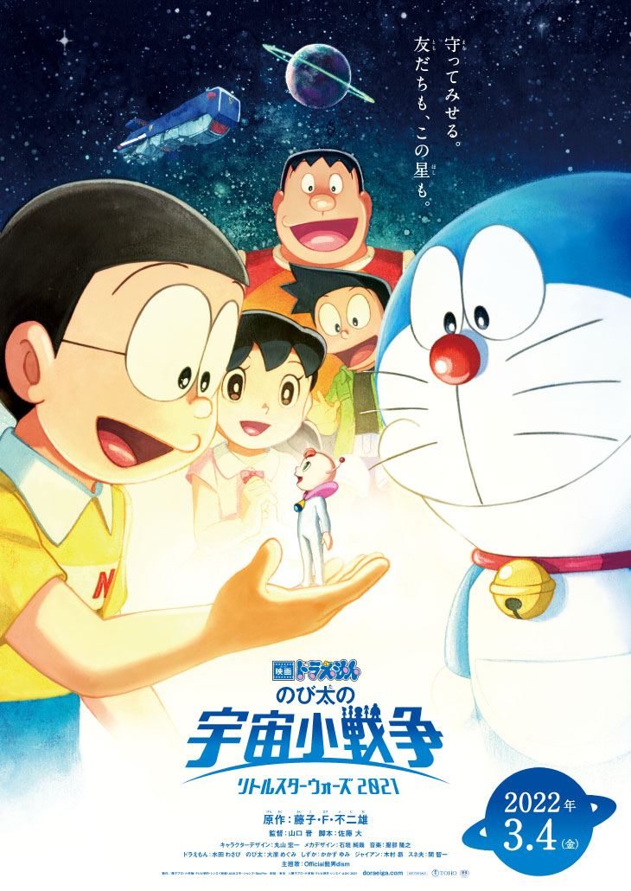
20211985 年版「宇宙小戰爭」的重製，因 COVID-19 疫情延期一年上映。帕比的故事以最新動畫技術重現，星球政變的場景更加壯觀，同時加強了帕比故鄉的世界觀背景，讓觀眾對帕比的奮鬥有更深的投入感。
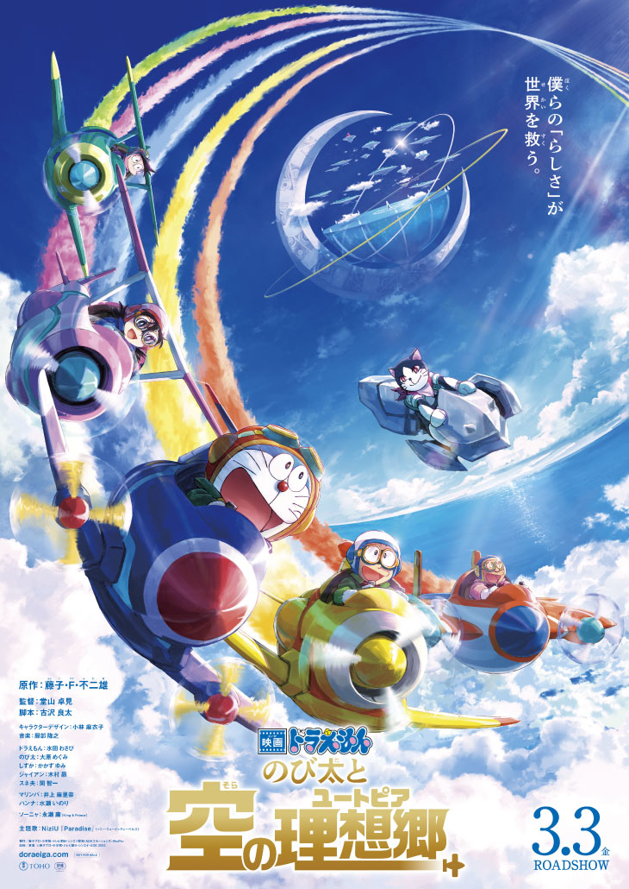
2022天空深處存在著一個烏托邦城市「パラダピア」，那裡的一切都完美無缺——居民永遠快樂，沒有爭吵，沒有失敗。然而大雄逐漸察覺，完美背後隱藏著對自由意志的恐怖剝奪。究竟是「被控制的完美」還是「痛苦的自由」，才是真正的幸福？
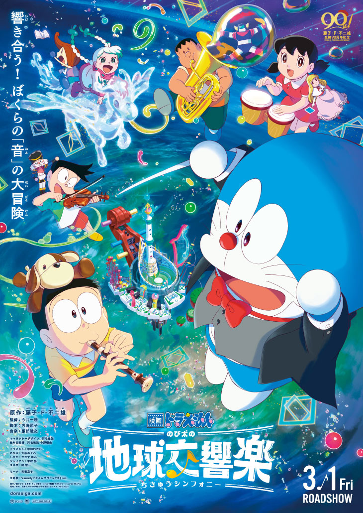
2023以音樂為主題的感動大作。音樂少女「ムシカ」出現在大雄面前，她帶來了壞消息——地球上所有的聲音正在消失，動物的叫聲、自然的音韻、人類的歌聲都在枯竭。唯有集合世界所有的音樂力量，才能拯救這場無聲的末世危機。